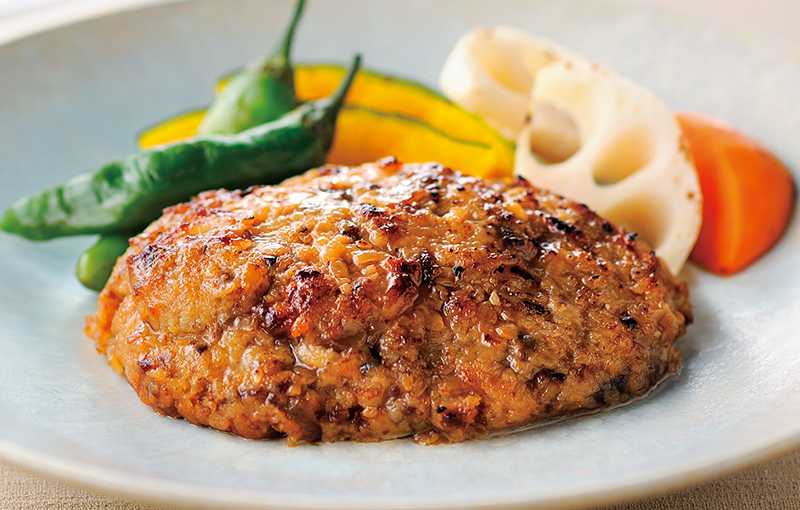
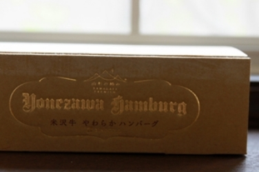
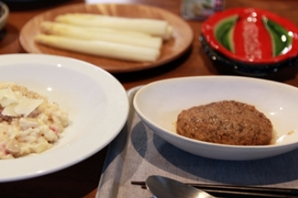
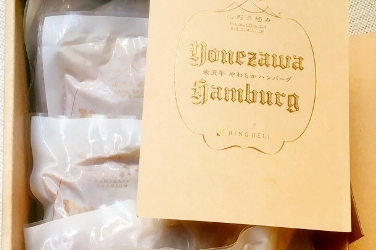
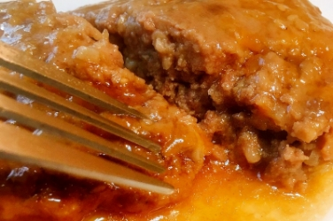
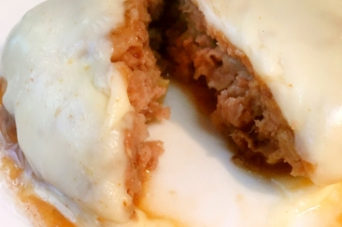

山形県製
米沢牛やわらか
ハンバーグ
米沢牛だけを贅沢に使用
霜降り肉の旨みを湯煎で気軽に堪能
ここが「極み」
- 米沢牛だけを100%使用
- 椎茸、酒粕などを加えた奥深い味
- 旨みを凝縮した和風味
米沢牛だけを使い、ジューシィに仕上げ
山形県産の黒毛和牛、米沢牛だけを100%使用した贅沢なハンバーグ。生のみじん切りタマネギに椎茸、酒粕を加えて、風味豊かに仕上げました。1個ずつパウチになっているので、冷凍のまま湯煎で10分加熱するだけ。脂の融点が低い霜降り肉を使うハンバーグは、焼き方にコツが要りますが、手軽にベストな調理が可能です。粗挽きのお肉と肉汁がぎっしりの、やわらかでジューシィなハンバーグ。旨みを凝縮した和風味をお楽しみください。

レビュー
開封から味わいまで、
美食の専門家が徹底レビュー！
大人も子供も楽しめるハンバーグ、
とてもおいしくいただきました。
パン教室講師吉永麻衣子 さん
-
丁寧な包装に心が躍り、あけてまたうれしー！

-
「冷凍のまま10分湯煎してお皿へ」まぁ、なんて簡単！たまの贅沢、簡単におうちで楽しめて最高です。
-
袋の外から触ってもわかるくらいやわらかいんです、このハンバーグ。
-
ハンバーグが少し甘めのソースなのでわさびや柚子胡椒といただいてもおいしいです。

「霜降りの粗挽き肉を丁寧にまとめたジューシーな肉料理」とでも表現したくなる
グルメライター猫田しげる さん
-
正直思ったのは「上手に焼く自信がない！！」しかし……箱を開けて見た説明文には、なんと「冷凍のまま10分湯煎してお皿へ」

-
さっそく湯煎。長い10分、されど幸せな10分ですね。
-
まさに「肉の塊を切っている」という実感があります。肉汁がじゅわ～っとあふれ出てきます。

-
こんなハンバーグ、食べたことがありません。霜降り肉100％の威力を思い知りました。
